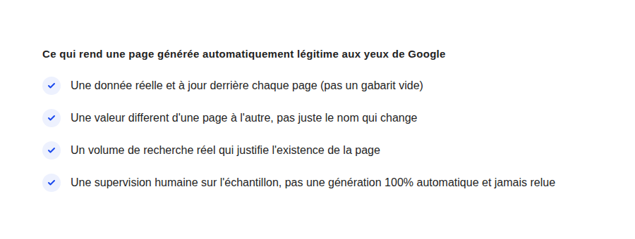

Programmatic SEO : où s'arrête l'automatisation raisonnable
« On génère 500 pages à partir de notre base produit, ça devrait booster le SEO non ? » — le programmatic SEO fait recette parce qu'il promet du volume sans effort éditorial. Le problème n'est jamais la méthode elle-même, c'est ce qu'on met derrière chaque page générée.
Le programmatic SEO — générer un grand nombre de pages à partir d'un gabarit et d'un jeu de données — n'a rien de nouveau ni de malhonnête en soi. Les comparateurs de vol, les annuaires d'avis, les plateformes immobilières fonctionnent comme ça depuis des années, et rankent très bien. Le problème n'est jamais la méthode, c'est ce qu'on distribue derrière chaque page : certains sites construisent une vraie utilité à grande échelle, d'autres construisent un tas de pages vides qui se ressemblent toutes.
Ce que Google sanctionne réellement
Google ne pénalise pas l'automatisation en tant que telle — sa politique sur le contenu utile insiste sur le fait que la manière dont un contenu est produit compte moins que sa capacité à répondre réellement à une recherche. Ce qui est sanctionné, c'est le contenu à faible valeur ajoutée produit en masse : des pages qui changent une seule variable (une ville, un nom de produit) sans rien apporter de spécifique au-delà de ce changement.
Le test qui tranche : la page survivrait-elle seule ?
La question que je pose systématiquement en audit : si cette page était la seule de tout le site, aurait-elle une raison d'exister ? Une page produit avec un vrai stock, un vrai prix, une vraie disponibilité passe ce test. Une page « meilleur [produit] à [ville] » générée pour 400 villes avec le même texte et juste le nom de la ville qui change ne le passe pas.
Les signaux d'un programmatic SEO qui tient la route
- Une donnée source réelle et vivante. Un flux produit à jour, des avis réels, des disponibilités réelles — pas un texte statique généré une fois et jamais mis à jour.
- Une différenciation qui dépasse la variable substituée. Une page locale qui mentionne un vrai détail propre à cette zone (un quartier, une contrainte réglementaire locale) plutôt qu'un texte identique avec juste le nom de ville changé.
- Un volume de recherche qui justifie chaque page. Générer une page pour une combinaison que personne ne recherche jamais est un coût d'indexation sans bénéfice, et dilue potentiellement le budget de crawl du reste du site.

Un exemple concret : pourquoi nos pages villes ne sont pas du programmatic SEO au sens strict
Sur ce site, les pages dédiées à Annecy, Lyon et Grenoble pourraient ressembler à du programmatic SEO — même structure, même gabarit. La différence tient à ce qu'il y a dedans : un visuel propre à chaque ville, des références locales réelles, un contenu pensé et relu individuellement plutôt que généré en masse depuis un tableau de données. C'est la nuance qui sépare un gabarit réutilisé intelligemment d'une page vide dupliquée 400 fois.
La checklist avant de lancer un chantier programmatic SEO
Avant de générer la première page : vérifiez que la donnée source sera maintenue à jour dans la durée (une page obsolète est pire qu'une page absente), que chaque page apporte une information vérifiable au-delà de la variable qui change, et que le volume de pages générées reste proportionné au volume de recherche réel derrière. Si l'une de ces trois conditions manque, ce n'est pas du programmatic SEO qui fonctionne — c'est du contenu dupliqué qui attend sa purge par Google.
FAQ
Le programmatic SEO est-il interdit par Google ?
Non, il n'est pas interdit en soi. Google évalue la valeur du contenu produit, pas la méthode de production — un contenu automatisé mais réellement utile est traité comme n'importe quel autre contenu utile.
Combien de pages peut-on générer sans risque ?
Il n'y a pas de seuil universel : le critère est la valeur individuelle de chaque page, pas leur nombre. Mille pages réellement utiles valent mieux que cent pages vides.
Comment savoir si mes pages générées sont trop proches les unes des autres ?
Comparez deux pages générées au hasard : si le seul changement notable entre les deux est la variable substituée (un nom de ville, un nom de produit), c'est un signal d'alerte à corriger avant d'aller plus loin.
Envie d'un audit avant de lancer un chantier de contenu à grande échelle ?
Pour aller plus loin, voir la page SEO, la page Cocons sémantiques, et la page Netlinking en 2026.
Pour continuer sur ce sujet.